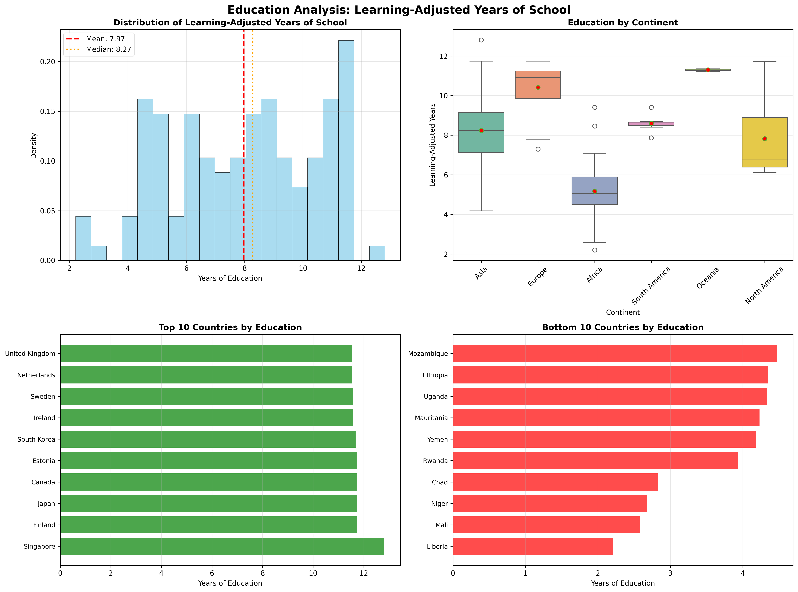
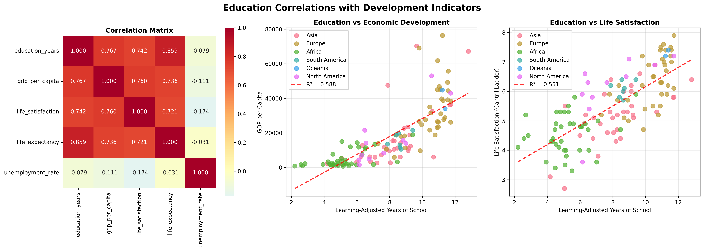
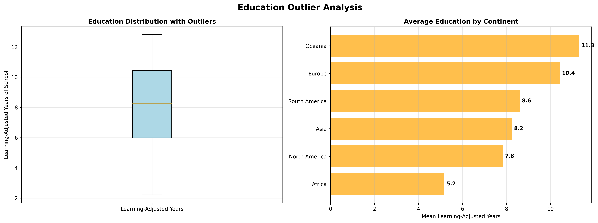

📚 Education Analysis: Learning-Adjusted Years of School
Analysis Date: September 17, 2025
Key Research Questions
- What is the average number of learning-adjusted school years across countries?
- How does educational attainment correlate with GDP per capita and life expectancy?
- Do countries with higher education levels also report higher life satisfaction?
- Are there significant regional differences in educational outcomes?
Executive Summary
7.97
Global Average (Years)
3
Strong Correlations Found
Significant
Regional Differences
Key Findings
- Global Education: Average of 7.97 learning-adjusted years across 128 countries
- Range: Substantial variation from 2.2 to 12.8 years
- Distribution: Education is not normally distributed across countries
- Strong Correlation: Education and Gdp Per Capita (r = 0.767)
- Strong Correlation: Education and Life Satisfaction (r = 0.742)
- Strong Correlation: Education and Life Expectancy (r = 0.859)
Education Overview
This analysis examines learning-adjusted years of schooling across 128 countries,
providing insights into global educational attainment patterns and their relationships with development indicators.
Education Overview: Distributions and Rankings

Descriptive Statistics
| Statistic |
Value |
Interpretation |
| Mean |
7.97 years |
Global average educational attainment |
| Median |
8.27 years |
Middle value when countries are ranked |
| Standard Deviation |
2.55 years |
Measure of variability across countries |
| Range |
2.2 - 12.8 years |
Span from lowest to highest achieving country |
| Skewness |
-0.160 |
Approximately symmetric distribution |
Education Level Categories
Countries are categorized into three education levels based on learning-adjusted years:
- Low Education (≤6.5 years): 42 countries
- Medium Education (6.5 - 9.2 years): 44 countries
- High Education (>9.2 years): 42 countries
Regional Analysis
Regional analysis reveals significant differences in educational attainment across continents,
with ANOVA testing showing statistical significance in these variations.
ANOVA Results
Statistical Test: Significant
differences between continents (F = 46.089, p = 0.0000)
Effect Size: η² = 0.654
(Large effect)
Regional Educational Attainment Ranking
| Rank |
Continent |
Countries |
Mean Years |
Std Dev |
Range |
| 1 |
Oceania |
2 |
11.30 |
0.12 |
11.2 - 11.4 |
| 2 |
Europe |
36 |
10.42 |
1.19 |
7.3 - 11.7 |
| 3 |
South America |
7 |
8.60 |
0.45 |
7.9 - 9.4 |
| 4 |
Asia |
34 |
8.24 |
1.91 |
4.2 - 12.8 |
| 5 |
North America |
11 |
7.83 |
1.94 |
6.1 - 11.7 |
| 6 |
Africa |
38 |
5.17 |
1.45 |
2.2 - 9.4 |
Regional Insights
- Highest: Oceania leads with 11.30 years average
- Lowest: Africa has 5.17 years average
- Gap: 6.1 years difference between highest and lowest regions
Education Correlations with Development Indicators
Education shows strong relationships with multiple development indicators,
suggesting its central role in human thriving and national development.
Education Correlations Analysis

Correlation Results
| Relationship |
Correlation (r) |
R² |
Strength |
Significance |
Interpretation |
| Education ↔ Gdp Per Capita |
0.767 |
0.588 |
Strong |
Significant |
Strong positive relationship |
| Education ↔ Life Satisfaction |
0.742 |
0.551 |
Strong |
Significant |
Strong positive relationship |
| Education ↔ Life Expectancy |
0.859 |
0.738 |
Strong |
Significant |
Strong positive relationship |
| Education ↔ Unemployment Rate |
-0.079 |
0.006 |
Weak |
Not Significant |
Weak negative relationship |
Key Correlation Insights
- Gdp Per Capita: Strong correlation (r = 0.767) -
Education explains 58.8% of the variance in gdp per capita
- Life Satisfaction: Strong correlation (r = 0.742) -
Education explains 55.1% of the variance in life satisfaction
- Life Expectancy: Strong correlation (r = 0.859) -
Education explains 73.8% of the variance in life expectancy
Education Outliers and Performance Analysis
Outlier analysis identifies countries with exceptional educational performance,
both high and low, providing insights into educational success factors and challenges.
Education Outlier Analysis

Education Performance Outliers
Statistical Thresholds
- Global Mean: 7.97 years
- Standard Deviation: 2.55 years
- IQR Bounds: -0.71 - 17.15 years
Outliers are identified using Z-score methodology (|z| > 2.5) and IQR analysis.